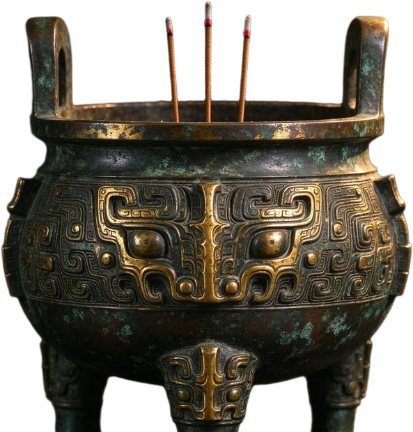
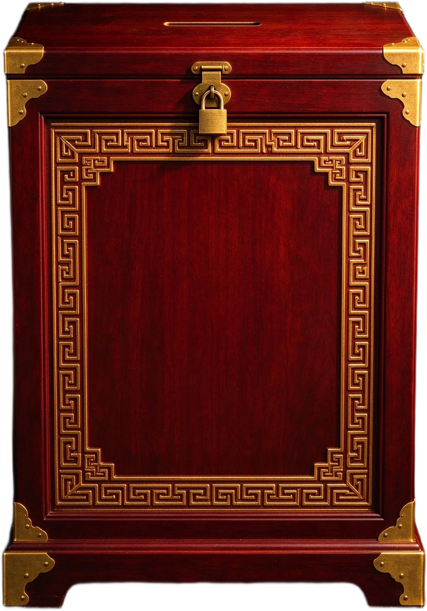

功德箱Merit Box
恭迎善信
Welcome, devotee自 远方 而来
From afar佛光普照 六时吉祥
Buddha's light shines · auspicious through the six periods金身
莲台端坐 · 万籁俱寂
香云缭绕 一炷心香
亥时 · 人定Hour of the Boar · Rest
03:00
一炷香 · 静坐One stick of incense
藏经
The Canon诵持之典｜三经一咒 · 三藏全文
大悲咒为梵音音译，字句即音，不必求解；诵时心口如一，句间稍作停顿。Chanted in transcribed Sanskrit; recite evenly, pausing slightly between lines.
注音依汉传常诵读法标注，凡同字异读者（佛、阇、伽、般、若、啰、咄）已逐字校正；拼音只作助读，非梵文转写。Pinyin follows the common Chinese chanting reading; where one character carries several readings, the customary one is used. It is a reading aid, not a Sanskrit transliteration.
经
录文据 CBETA《大正藏》电子佛典，标点一仍其旧，校勘从略。Text per the CBETA Taisho edition; punctuation kept, apparatus omitted.
经藏总目THE CANON AT A GLANCE
中文《大藏经》所收典籍数以千计，梵文、巴利文写本更是浩如烟海。此处按三藏、十二部经、 阅读路径与书目四层排开，收三十四部全文，皆可直接读毕，只为给初学指一条不必迷路的入口。 A thousand scriptures sit in the Chinese canon, and more in Sanskrit and Pali. What follows sorts them by three baskets, twelve genres, reading routes and a shelf of thirty complete texts, picked from the whole canon.
三藏TRIPIṬAKA · THE THREE BASKETS
经藏
SŪTRA-PIṬAKA佛陀亲口宣说，多以「如是我闻」开篇；场合、听众各别，长短深浅不一。
- 心经 · 金刚经
- 普门品 · 行愿品
- 阿弥陀经 · 无量寿经
- 地藏经 · 药师经
- 圆觉经 · 维摩诘经
律藏
VINAYA-PIṬAKA戒条与僧团规约，每条都带着制戒的因缘故事，是教团能立千年的骨架。
- 梵网经（菩萨戒）
- 十重四十八轻
- 居士戒 · 十善业道
- 戒为无上菩提本
论藏
ABHIDHARMA-PIṬAKA弟子与祖师的系统阐释，把经中的义理拆解、编排、论证成可修可证的次第。
- 中论
- 十二门论 · 百论
- 大乘起信论
- 百法明门论
十二部经TWELVE GENRES · DVĀDAŚĀṄGA
契经
SŪTRA散文体的长行教导。
应颂
GEYA以偈颂重述长行之义。
记别
VYĀKARAṆA授记弟子何日成佛。
讽颂
GĀTHĀ纯偈颂体，不伴长行。
自说
UDĀNA无问自说，感兴而发。
因缘
NIDĀNA说法与制戒的缘起故事。
譬喻
AVADĀNA以喻明理，令义可触。
本事
ITIVṚTTAKA弟子前世的行迹。
本生
JĀTAKA佛陀因地修行的故事。
方广
VAIPULYA广大深奥的大乘教法。
未曾有
ADBHUTA-DHARMA不可思议的神变事迹。
论议
UPADEŚA问答往复，抉择法义。
阅读路径READING ROUTES · 由浅入深
书目SHELF · 三十四部全文
全文独立页FULL TEXTS · SEPARATE PAGES
佛教故事STORIES · 譬喻 本生 因缘 禅门 廿九则
佛经里最动人的部分常常不是义理，而是故事：一个愚人、一只鸟、一盏灯，便把道理说尽了。 此处取譬喻、本生、因缘与禅门四类共二十九则，点开即读，文末一句所喻。 The most moving part of the canon is often its stories. Twenty-nine of them here — parables, past lives, causes and Chan encounters. Tap a card to open it.
故事多出《百喻经》《杂宝藏经》《贤愚经》《大智度论》《景德传灯录》，原文为文言，此处以白话简写；欲读原典，可往藏经取全文。Paraphrased from the Chinese canon; the full texts sit in the Canon room.
读经四要FOUR WAYS TO READ
恭敬心
读前洗手、端坐。经不是闲书，是法的载体。Wash, sit straight: this is not casual reading.
反复读
第一遍不懂不要紧，读多了，义理自己会开。Read it again; meaning opens with repetition.
结合修行
读到哪个法门，就去试哪个法门。Put into practice whatever practice you meet.
参考注疏
不懂处查古德注疏，最终仍要自己证得。Consult the ancients, then verify it yourself.
功课
Daily Practice日日不辍｜一日一记
今日功课Today's Practice
满一百零八即为一串、一百零八遍圆满
A full rosary is one hundred and eight
今日一偈A Verse for Today
诸恶莫作，众善奉行，自净其意，是诸佛教。
DO NO EVIL・PRACTISE WHAT IS GOOD・PURIFY THE MIND・THIS IS THE TEACHING OF ALL BUDDHAS功课毕，可念一段回向：愿以此功德，普及于一切，我等与众生，皆共成佛道。
May this merit be shared with all beings; may we together awaken.
仪轨
Rites & Manners入殿之礼｜四事问答
上香
OFFERING INCENSE取香一枝，双手平举至眉齐，默念所愿；插香时不必用力，香与香之间留一指宽。一枝即可，不必求多。
供养
MAKING AN OFFERING花、果、清水为上，取其清净；供毕可自受用，不弃不焚。供品以心意为主，不在贵重。
合十问讯
JOINING PALMS双掌相合于胸前，脊背自然直立，躬身约三十度为一问讯；起身时缓慢，不与旁人说笑。
早课
MORNING SERVICE · TEN MINUTES- 净手漱口，供水一盅，上香一枝。
- 合十，三称「南无本师释迦牟尼佛」。
- 诵《心经》一遍，或只诵「照见五蕴皆空」一句，反复三遍。
- 念佛十声，出声或默念皆可。
- 回向：愿以此功德，普及于一切，我等与众生，皆共成佛道。
晚课
EVENING SERVICE · TEN MINUTES- 整理香案，撤去残香，水盏换净。
- 静坐三分钟，只数呼吸，从一至十。
- 诵《阿弥陀经》片段，或佛号一串（一百零八声）。
- 省过：今日何处起了贪、嗔、痴，明日如何不再犯。
- 回向，熄灯，不多言。
入殿问答Questions
- 殿里可以拍照吗？
- 可以，但请关掉闪光，不要跨过拜垫、不要正对他人礼佛时按快门。拍下的影像不用于商业与戏谑。
- 许愿要不要还愿？
- 佛法讲发愿与行愿，重在愿后的行动：善待身边人、少一分贪嗔。若在别处许过愿，按当地寺院的规矩行事即可。
- 供品怎么处理？
- 撤供后与家人分食，或转赠他人，皆是惜福。不宜随手弃于地面、丢入垃圾桶。
- 心静不下来怎么办？
- 不必强压。先数呼吸，从一数到十，反复即可；念头起时不追不斥，回到呼吸便是。
- 供灯是什么意思？
- 灯表智慧、表照破无明，不表许愿灵验。点一盏，是提醒自己愿做那一点光：照见自己，也照见旁人。
- 功课要念多久？
- 宁少而恒。定下一个日日做得到的量——三分钟、一串佛号、一遍心经——先做满一月，再谈加量。
- 在家也能这样做吗？
- 能。焚香一支、净水一杯、静坐片刻，皆是供养；不必置办法器，也不必择日择时。
次第
The Path由信而解｜由解而行
学佛不是一步登天，多是一段一段走。下面五阶只是常行的次序，不是考级；勾一项，只是给自己留个记号。Study is walked in stages, not climbed in one leap. These five are a common order, not a ladder of grades — a tick is only a mark for yourself.
0 / 15已行 · done
一
信 · 因果Faith in cause and effect
二
戒 · 行持Precepts and conduct
三
定 · 静坐Stillness
四
慧 · 观照Insight
五
愿 · 回向Vow and dedication
勾选只记在这台电脑的浏览器里，不进云端、不发他人；欲知经论原意，仍以经本与善知识为准。
Ticks are kept in this browser only, never uploaded or shared. For the deeper meaning, rely on the scriptures and a good teacher.
寺院
The Temple殿宇之制｜称谓与结缘
十方来朝 · 寰宇图
Where the pilgrims come from 累计 — 次 · 遍及 — 处 · — VISITS星野已绘，来处待人The land is drawn — the visits await the count
每一点即一处来处，省市各有其光；光亮随来朝人次渐盛，同一浏览器每日只计一次，不记个人资料。One point per province or city of origin; the light grows with the visits. Counted once per browser per day, no profiles kept.
殿堂之制
THE HALL汉传寺院中轴多以山门、天王殿、大雄宝殿、法堂、藏经楼依次排开，两侧配钟鼓楼、伽蓝殿、祖师殿。大雄宝殿为主殿，「大雄」意为能降伏烦恼的勇士，殿内主尊多为释迦牟尼佛。
主流布局：山门 → 天王殿 → 大雄宝殿 → 法堂。
造像之法
THE IMAGE佛像多结跏趺坐于莲台：莲表清净，出淤泥而不染；手结定印或触地印，表禅定与觉悟。两侧常立胁侍，或供观音、文殊、普贤、地藏四大菩萨。
金身非为华美，取「金」之不变不坏，表法身常住。
法器与供具
ALTAR & BELL钟、鼓、磬、木鱼、香炉、烛台、幡帐，各有其用：钟表警醒昏沉，磬表清净，香表戒定之德。供桌上的香、花、灯、涂、果、茶、食、宝、珠、衣，称为「十供养」。
供具不在多，在常清洁、常恭敬。
称谓How to address
- 方丈 · 住持
- 一寺之主，由僧团推举；「方丈」原指住持居所，后成为对其尊称。Abbot of a monastery
- 法师
- 原指通晓佛法、能为人师者。当面称「法师」或「师父」皆可，不必称「大师」以求隆重。Dharma master
- 和尚
- 梵语「邬波驮耶」的讹略，意为亲教师；本非贬称，但日常称「师父」更为亲切妥帖。Upadhyaya, preceptor
- 比丘 · 比丘尼
- 受具足戒的男众、女众。在家人可泛称「师父」，不必追问戒腊与职务。Bhiksu / Bhiksuni
- 居士
- 在家学佛者的通称，梵语「迦罗越」。自称居士是谦辞，称他人则含敬意。Lay Buddhist
- 结缘
- 以物相赠、以法相见，皆名结缘，不作买卖。念珠、经书、香，通常由寺院流通处供给，随喜成本即可。Karmic connection, not commerce
页面所写为汉传佛教通行的殿堂形制与称谓常识，不指某一具体寺院；礼佛细节以当地寺院的规矩为准。
These notes describe common Chinese Buddhist conventions, not any particular temple.
缘起 · 联络Colophon & Contact
全站检索Search 关于本站 · 隐私 · 授权 · EnglishAbout · Privacy · License · English edition
优婆塞 SongUpasaka Song
hello@obenno.com此页由优婆塞 Song 一手搭起，若有讹误或想说的话，写信即可。
Built and kept by Upasaka Song — corrections and a kind word are welcome.
性质非营利个人道场：不投放广告、不售卖任何物品，也不设账号与会员；功德箱纯属自愿随喜。
随喜纯出自愿，非交易、非凭证、无对价；款项只补服务器与素材开销。
数据除供养页收款码外，不收姓名与联系方式。除匿名统计所需 Cookie（Microsoft Clarity）外不写 Cookie，不做广告追踪；功课、供灯、回向仅存本机浏览器。详见 隐私与 Cookie。
问候地名与到访人次由本页自建的计数服务给出，落点到省/州与城市，国家只作归类，不经任何第三方定位接口；同一浏览器每日只计一次，IP 仅作成单次去重用的短哈希，两日后即弃，不存原 IP、不建档案。服务不可达时，欢迎语回落为「自 远方 而来」。
A NON-PROFIT PERSONAL SHRINE — no fundraising, sales, ads or accounts. Offerings are voluntary, never a transaction or a receipt. Apart from the offering QR codes, no personal data is collected: no cookies, no ad tracking, and practice logs stay in your own browser. The greeting and the visit totals come from a counting service this page runs itself — resolved down to province/state and city, with the country used only for grouping, no third-party geolocation, once per browser per day; the IP is reduced to a short-lived hash for de-duplication and discarded after two days, so no raw address and no profile is kept. If that service is unreachable, the greeting simply falls back to “from afar.”供养
Offerings灯花净水｜存于本机


此处供养 · 自己的记数MY RECORD
- 初发心第一日
- 七日第二至七日
- 廿一日三七日
- 七七日四十九日
- 百日一百日
还没有开始记数。点一盏、供一枝，这一日就记下了。
灯墙只存于本机浏览器：点一盏即现，吹熄即隐，换设备即空。The wall lives in this browser — light one and it appears, blow it out and it goes.
「诸供养中，法供养最。」
《华严经 · 普贤行愿品》 Of all offerings, the offering of the Dharma is the highest. — Avataṃsaka Sūtra财施养色身，法施养慧命。供灯、供花、供水，都是借物摄心；把经读进去、把道理行出来，才是第一等供养。殿内这只功德箱只为长年运维的一笔小费，不是门票，不是服务，也无任何对价。
功德箱 · 随喜供养
MERIT BOX · VOLUNTARY金额随意，一分也是心意；不供亦可，读经才是本愿。本站为非营利个人道场，随喜不构成交易、不开票据、无任何对价；扫码即转到支付页，本站不经手、不留存任何款项信息。
国际汇款 · International transfer
- 账户名称 · Account name
- Fei Song
- IBAN
- GB03EZYR04000100371583
- 账号 · Account no.
- 00371583
- BIC / SWIFT
- EZYRGB2LDPB
- 银行名称 · Bank
- IFAST GLOBAL BANK LIMITED
- 银行地址 · Bank address
- iFAST Global Bank Limited, SQB, 77 Marsh Wall, London E14 9SH
可长按选中复制 · long-press to copy
本站为免费分享页面，无任何付费服务，亦不售卖任何物品。资助仅用于域名年费、服务器与图文素材更新，完全自愿，不作任何承诺与对价。This site is free and sells nothing. Contributions are voluntary and cover domain, hosting and image upkeep only.
灯火花水只存在这台电脑的浏览器里，换设备、清缓存就会散去；不为他人所见，也无人代你守护。
Offerings are kept in this browser only; they are not shared or transmitted.
历数
Almanac朔望斋期｜圣诞将至
—
—
— ——
圣诞将至Coming Observances
历法依浏览器内置中国农历换算（Intl chinese calendar），不作择吉、不作预言。斋期按汉传丛林通行的六斋日：初八、十四、十五、廿三、廿九、三十。
Lunar dates are computed with the built-in Chinese calendar; no divination is offered.
检索
Search遍搜全殿｜经句与问答
名相Glossary
检索范围：三十四篇经咒全文（约一百三十万字录）、诵持三经、功课与仪轨问答、寺院称谓、历数圣诞；下方名相为常用术语浅释，一句一条，不作定解。
Searches the sutra texts, the Q&A pages, temple notes and observances. The glossary below gives one-line notes on common terms, not definitive definitions.
长按识别，或截图后扫 · long-press to recognise, or screenshot and scan
长按识别，或截图后扫 · long-press to recognise, or screenshot and scan
本站为免费理念分享页面，无任何付费服务。长期线上展示需要持续承担域名年费、海外服务器租赁、图文素材更新等固定成本。如您认可本站，可自愿小额资助站点日常运维，所有资助完全自愿，感谢您的馈赠。This site is a free sharing space with no paid services. Keeping it online long term means steady fixed costs — domain renewal, overseas hosting, and the ongoing refresh of images and texts. If you find it worthwhile, you may make a small voluntary contribution towards its upkeep. All support is entirely voluntary; thank you for your kindness.
轻触任意处关闭Tap anywhere to close
第 一 签
上吉MOST FAVOURABLE
心诚则灵Sincerity is what answers
轻触任意处收起Tap anywhere to close
描红抄经TRACING COPY
大悲咒